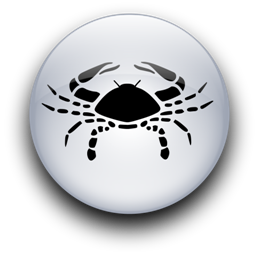

Женщина Козерог и Мужчина Рак
-


Что бы он вам ни говорил и как бы ни отрицал это, но мужчина-Рак обожает, когда с ним нянчатся. Если его подруга - Козерог, у нее так развито чувство ответственности, что она уже поэтому будет изо всех сил стараться угодить любимому мужчине, ни на что не жалуясь. Правда, иногда он входит во вкус, полагая, что она должна потакать всем его изменчивым настроениям. Она откажется, даже если очень любит его.
Честно говоря, оба они могут быть весьма и весьма эгоистичны, хотя, глядя на них, этого не скажешь. С женщинами, а особенно со, своей подругой, он мягок, уважителен и любезен, а Раки высоко ценят свою собственность. При этом он способен требовать гораздо больше, чем может дать сам, полагая, что каждое его фырканье или сварливое высказывание будет принято с почтением, и если она этого не сделает, то она просто не любит его, вот и все.
Если она типичный Козерог, то она отнесется к этому сдержанно и спокойно. Конечно, она всегда готова помочь. И все же она не позволит использовать себя сверх разумного предела даже ради любви. Она не позволит вытирать о себя ноги - при всем ее привлекательном и внешне мягком поведении в ней проявляется самосознание личности. Она не станет хлопать ресницами и изъясняться исключительно намеками. То, что ей нравится, она просто возьмет, то, что не нравится, быстренько удалит из своей жизни. Когда что-то ее расстраивает, она не жалуется. Она просто справляется с этим, а потом следит, чтобы подобное больше не повторилось. В этом отношении она очень похожа на женщину-Скорпиона, только воспринимает все не так эмоционально.
Женщина-Козерог не страдает излишней чувствительностью, и ей надо быть осторожней с Раком, ведь он именно этим и отличается, и его очень легко обидеть. Если она станет критиковать его или выскажет свое недовольство, он не успокоится, пока она "не возьмет свои слова назад", не скажет, что любит его, и не признает, что у него практически нет недостатков. Сначала он попытается шутить по этому поводу, потом перейдет к прозрачным намекам и в конце концов прибегнет к последнему средству - надуется. Если она позволит ссоре зайти слишком далеко, помириться будет сложней: он спрячется в своем панцире и будет упорно цепляться за собственные аргументы, мнения и обиды. Что здесь может помочь, так это похвала и одобрение. Любящая его женщина-Козерог должна постоянно повторять, какая он личность и как она им восхищается, ведь именно так делала его мама. Она всегда говорила ему, какой он хороший мальчик и как его враги не понимают его. В трудных случаях он переведет это так, будто каждый, кто не согласен с ним, - его враг, даже женщина, которую он любит. Будучи взрослым, он хочет такого же понимающего отношения, какое встречал, когда был ребенком. Это вполне обоснованно с его стороны. Разве мы не хотим, чтобы нас понимали? Разница в том, что большинство из нас быстро "перерастает" эту мечту. Только Рак ждет этого, как чего-то должного. Уважения. Понимания. Любви. Нежности. Восхищения.
Типичная женщина-Козерог не искушена в подобных вещах. Она практична и благоразумна. Он же знает, что она любит его, а если они иногда и ссорятся, разве из-за этого он должен сомневаться в ее любви? Излишняя чувствительность и сильные эмоции ее нервируют. Дело не в том, что она бессердечна, - она просто, плохо представляет себе, как реагировать, что именно говорить или делать. И она скорее предпочтет не делать ничего, чем случайно обидеть его.
Она слишком скромна, ведь у нее достаточно ума, чтобы находить ответы там, где не удается другим, она умеет сосредоточиваться и размышлять над проблемой, пока не решит ее, и ее суждения всегда обоснованны. Просто ей надо научиться всем этим пользоваться в эмоциональных ситуациях - это сделало бы их жизнь намного легче.
Его потребность в одобрении и высокой оценке не самая большая сложность в их отношениях. Просто он должен проявлять немного меньше обидчивости, а она - немного больше нежности и сочувствия. Конечно, если уж говорить правду, ей тоже нужна высокая оценка. Правда, вряд ли он догадается об этом сам, ведь не приходило же ему в голову одобрить или похлопать по плечу маму - он просто принимал ее подарки. А самый лучший подарок, который эти двое могут сделать друг другу, - лишнее объятие или поцелуй, лишняя пара добрых слов, более частые улыбки. Оба они одинаково нуждаются во внимании, разница в том, что он не стыдится просить его, а она не хочет даже признаться в этом.
Козерог, пока она еще молода, может быть даже неприметной, но с годами она становится все более красивой. И это особый дар Сатурна, так же как и очень ясное мышление, которое тоже приходит с возрастом. А еще в этой женщине есть прочность и сила духа, которых хватит на двоих.
Рак в юности бывает стеснительным, но с возрастом становится более уверенным в себе. С годами он развивает свое изумительное чувство юмора. Он полон очарования и деликатен - но при этом у него быстрый ум, и он тоже обладает ясностью мышления. При ясном уме и твердой памяти у него мягкое сердце, но у женщины-Козерога не только железный ум, но и сердце порой напоминает камень. Это плохо, ведь ее сердце - это сердце женщины. К тому же именно каменное сердце проще разбить на кусочки. Может быть, именно поэтому оно так чувствительно к обиде?
Нет сомнения в том, что ее козерожья мудрость, осторожность и самозащита - это влияние Сатурна, но прежде всего она женщина... со всеми чувствами, всеми мечтами и желаниями женщины. Женственность не обязательно синоним виновности. Ее чувства робки, но они не случайны и не фальшивы. Они самые настоящие, потому что живут в самом настоящем сердце.
Для Рака и Козерога секс - это так же серьезно, как и все остальное, и все же им трудно показать друг другу, что это значит для них на самом деле. Они не знают, как сказать, что их любовь позволяет им лучше увидеть и понять красоту. Она должна была бы сказать: "После наших объятий я чувствую себя так, что весь мир кажется ярче!" Но она скажет: "Посмотри, как солнце тронуло вершину сосны. Я, кажется, чувствую, как там пахнут шишки. Пойдем погуляем?" Он ответит: "Да, давай прогуляемся. Ты права. Прекрасное утро", тогда как на самом деле это означало бы: "Ты прекрасна! И я люблю тебя". Их сексуальные отношения выразительны и полны чувств, в них есть тот глубокий опыт, который возможен благодаря властному магнетическому притяжению крайних точек их астрологической полярности.
Иногда оба тоскуют по прошлому. Но женщина-Козерог достаточно благоразумна, чтобы понимать, что в мечтах прошлое выглядит куда привлекательнее, чем в действительности. Так что ее больше интересует то, как создать реальное настоящее) которое было бы таким, каким сейчас кажется прошлое. В конце концов, они встретились в настоящем, и у них должно быть будущее. И она поворачивает его живое "лунное" воображение от прошлого к будущему, и оба они движутся по спирали в круге, несущем в себе ответ на загадку любви.